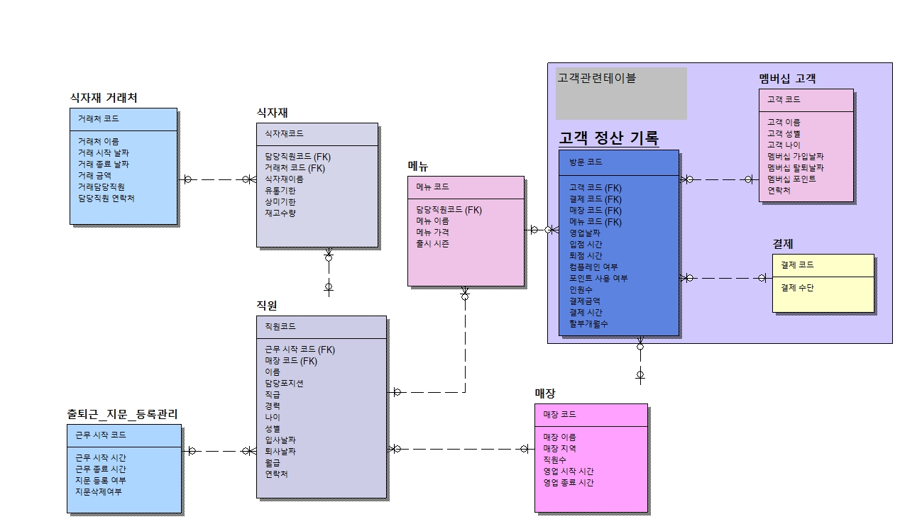

레스토랑 운영 DB 모델링
개요
학부생때 했던 아르바이트의 기억을 되살려 레스토랑 운영 시스템을 모델링했습니다.
시스템간 중복되거나 누락되는 문제점을 보완하고자 필요한 파트를 분담해 체계적인 관계도를 제작했습니다.
경험 정리
• ERWin 프로그램을 사용하여 DB 모델링을 진행했습니다. 컬럼들의 데이터 타입과 크기, 제약조건을 설정하는 것이 중요한 사항인 것을 배웠습니다.
• 엔티티간의 1:1, 1:m, n:m 관계차수를 상황에 맞게 적용해서 모델링을 진행했습니다.
※ 미니프로젝트는 레스토랑DB모델링 에서 확인하실 수 있습니다.
Technologies:
- - MySQL
- - ER-Win